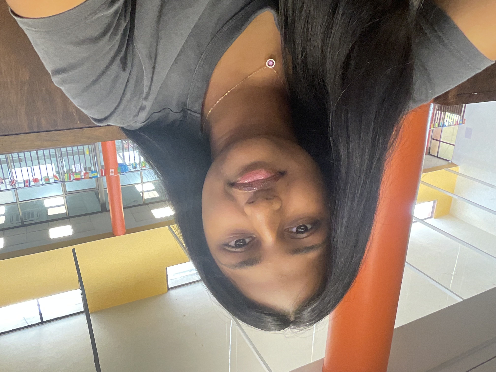

Statement of Inquiry
Unequal systems and social expectations can influence people's opportunities, choices and roles in society.
INDIVIDUALS & SOCIETIES · GRADE 8
Understanding global gender inequality and the barriers that continue to affect the opportunities, choices and experiences of women and girls around the world.
Gender equality is not simply about giving everyone the same opportunities. It is also about recognising the barriers that prevent people from accessing them.

Different experiences. One shared future.
PROJECT FRAMEWORK
This project investigates how gender inequality affects society and why creating equal opportunities matters.
Unequal systems and social expectations can influence people's opportunities, choices and roles in society.
Fairness and Development — exploring equality, opportunities, rights and the development of societies.
Systems — understanding how social, political and economic systems influence people's lives.
Equity and development — investigating how opportunities and resources can be distributed more fairly.
LEARNING OBJECTIVES
Identify different forms of gender inequality and understand their effects on individuals and communities.
Research global and Indian trends using reliable information, statistics and examples.
Compare information and investigate the social, economic and cultural factors behind inequality.
Explore possible solutions and consider how governments, communities and individuals can contribute to equality.

THE PERSON BEHIND THE PROJECT
Hi! I am a Grade 8 student at Aga Khan Academy Hyderabad. I created this website as part of my Individuals and Societies project on global gender inequality.
I chose this topic because I believe everyone should have the freedom to learn, work, make decisions and pursue their goals without being limited by their gender.
I wanted to understand why inequality continues to exist even though many countries have made progress towards equal rights. Through this research, I am exploring statistics, global and Indian trends, social expectations and the changes that could create a fairer society.
My goal is to raise awareness and encourage people to think about how equality can be improved in everyday life.
01 · BACKGROUND RESEARCH
Gender inequality occurs when people do not have equal rights, opportunities, treatment or access to resources because of their gender.
THE MAIN PROBLEM
Women and girls continue to face unequal opportunities in education, employment, leadership and decision-making. These barriers can limit their independence, participation and ability to reach their full potential.
Although progress has been made, inequality remains present in many societies and can take different forms depending on people's circumstances and location.
Gender inequality is not limited to one area of life. It can affect several parts of society.

Some girls face barriers to education because of poverty, discrimination, social expectations or limited access to schools.

Women can experience unequal pay, limited career opportunities, discrimination and an unequal share of unpaid care responsibilities.

Women remain underrepresented in many political, business and decision-making positions.
UNITED NATIONS
Sustainable Development Goal 5 aims to achieve gender equality and empower all women and girls.
It includes ending discrimination, supporting equal participation, recognising unpaid care work and ensuring equal opportunities for leadership.
Explore United Nations SDG 5 →02 · GLOBAL RESEARCH
Statistics help us understand the scale of inequality and identify areas where progress is still needed.
Approximate share of parliamentary seats held by women worldwide in January 2025.
Approximate share of managerial positions held by women worldwide in 2023.
The United Nations goal focused on achieving gender equality.
Women held approximately 27.2% of parliamentary seats worldwide in January 2025.
Source: Inter-Parliamentary Union, January 2025.
Women held approximately 30% of managerial positions globally in 2023.
Source: United Nations Sustainable Development Goals reporting, 2024.
GLOBAL PERSPECTIVE
Gender inequality exists around the world, but its causes and effects can differ between regions. Select a region to explore some of its challenges.

Gender inequality exists in different forms around the world. Access to education, employment, healthcare and leadership can vary depending on location and social conditions.
03 · LOCAL PERSPECTIVE
India has made progress in areas such as education, employment and women's participation in public life. However, challenges remain in access to opportunities, economic participation and social expectations.

According to India's Periodic Labour Force Survey 2023–24, the labour force participation rate for people aged 15 years and above was 41.7% for women and 78.8% for men, using the usual status measure.
Source: Ministry of Statistics and Programme Implementation, PLFS Annual Report 2023–24.
Participation in the workforce can influence financial independence, decision-making and economic development. Improving access to education, safe workplaces and employment opportunities can help reduce these barriers.
04 · SOCIAL IMPACT
Gender inequality is not only shown through statistics. It can also affect the everyday experiences, choices and opportunities of individuals.
When girls face barriers to schooling, they may have fewer opportunities to develop skills and pursue future careers.
Unequal access to jobs, resources and fair pay can affect a woman's ability to make independent financial decisions.
Traditional expectations about gender roles can influence the choices people feel they are allowed to make.
Discrimination and harassment can restrict people's freedom and participation in public spaces, education and employment.
05 · MOVING FORWARD
Improving gender equality requires action from governments, schools, workplaces, communities and individuals.
Ensure that girls and boys have equal access to quality education, resources and opportunities to develop their abilities.
Encourage equal pay, fair recruitment, safe workplaces and opportunities for professional growth.
Support women's participation in leadership, politics, business and important decision-making.
Challenge harmful stereotypes and encourage respectful attitudes towards everyone.
Strengthen laws and policies that protect people's rights and address discrimination.
Encourage families, schools and communities to create environments where everyone can participate.
MY PROJECT WORK
This section connects the website to the different stages of my Individuals and Societies project.
Background research, important concepts, key vocabulary and an explanation of gender inequality.
My final research notes and source evaluations will be included here.
My research question, research plan, primary and secondary sources, and investigation process.
My research methods and collected information will be included here.
The way I organise and present information using written explanations, maps, images and statistics.
My final communication and bibliography will be included here.
Analysing evidence, evaluating different perspectives and considering possible solutions.
My evaluation and reflection will be included here.
RESEARCH REFERENCES
The following organisations provide information, statistics and research related to gender equality.